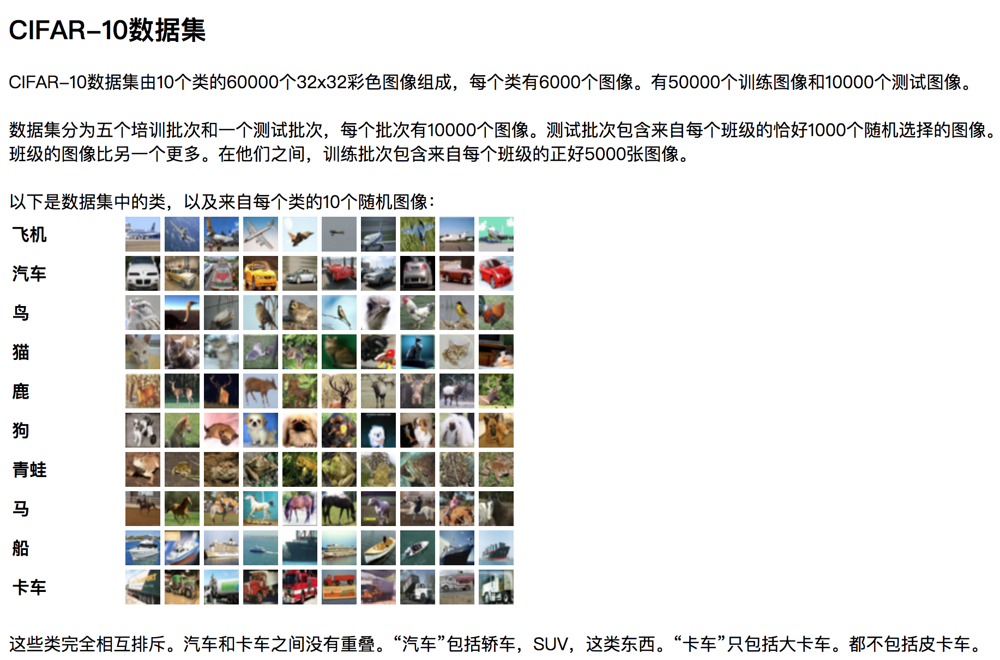

3.3 二进制数据
学习目标
- 目标
- 应用tf.FixedLengthRecordReader实现二进制文件读取
- 应用tf.decode_raw实现解码二进制数据
- 说明NHWC与NCHW的区别
- 应用tf.transpose进行维度的位置修改
- 应用
- CIFAR10类图片数据读取
- 内容预览
- 3.3.1 CIFAR10二进制数据集介绍
- 3.3.2 CIFAR10 二进制数据读取
- 1 分析
- 2 代码
- 1）NHWC与NCHW
- 2）处理图片的形状
- 3 完整代码
3.3.1 CIFAR10二进制数据集介绍

https://www.cs.toronto.edu/~kriz/cifar.html
- 二进制版本数据文件
二进制版本包含文件data_batch_1.bin，data_batch_2.bin，...，data_batch_5.bin以及test_batch.bin
。这些文件中的每一个格式如下，数据中每个样本包含了特征值和目标值：
<1×标签> <3072×像素>
...
<1×标签> <3072×像素>
第一个字节是第一个图像的标签，它是一个0-9范围内的数字。接下来的3072个字节是图像像素的值。前1024个字节是红色通道值，下1024个绿色，最后1024个蓝色。值以行优先顺序存储，因此前32个字节是图像第一行的红色通道值。 每个文件都包含10000个这样的3073字节的“行”图像，但没有任何分隔行的限制。因此每个文件应该完全是30730000字节长。
3.3.2 CIFAR10 二进制数据读取
1 分析
- 构造文件队列
- 读取二进制数据并进行解码
- 处理图片数据形状以及数据类型，批处理返回
- 开启会话线程运行
2 代码
- 定义CIFAR类，设置图片相关的属性
class CifarRead(object):
"""
二进制文件的读取，tfrecords存储读取
"""
def __init__(self):
# 定义一些图片的属性
self.height = 32
self.width = 32
self.channel = 3
self.label_bytes = 1
self.image_bytes = self.height * self.width * self.channel
self.bytes = self.label_bytes + self.image_bytes
实现读取数据方法bytes_read(self, file_list)
- 构造文件队列
# 1、构造文件队列 file_queue = tf.train.string_input_producer(file_list)- tf.FixedLengthRecordReader(bytes)读取
# 2、使用tf.FixedLengthRecordReader(bytes)读取 # 默认必须指定读取一个样本 reader = tf.FixedLengthRecordReader(self.all_bytes) _, value = reader.read(file_queue)- 进行解码操作
# 3、解码操作 # (?, ) (3073, ) = label(1, ) + feature(3072, ) label_image = tf.decode_raw(value, tf.uint8) # 为了训练方便，一般会把特征值和目标值分开处理 print(label_image)- 将数据的标签和图片进行分割
# 使用tf.slice进行切片 label = tf.cast(tf.slice(label_image, [0], [self.label_bytes]), tf.int32) image = tf.slice(label_image, [self.label_bytes], [self.image_bytes]) print(label, image)- 处理数据的形状，并且进行批处理
# 处理类型和图片数据的形状 # 图片形状 # reshape (3072, )----[channel, height, width] # transpose [channel, height, width] --->[height, width, channel] depth_major = tf.reshape(image, [self.channel, self.height, self.width]) print(depth_major) image_reshape = tf.transpose(depth_major, [1, 2, 0]) print(image_reshape) # 4、批处理 image_batch, label_batch = tf.train.batch([image_reshape, label], batch_size=10, num_threads=1, capacity=10)
这里的图片形状设置从1维的排列到3维数据的时候，涉及到NHWC与NCHW的概念：
1）NHWC与NCHW
在读取设置图片形状的时候有两种格式：
设置为 "NHWC" 时，排列顺序为 [batch, height, width, channels]；
设置为 "NCHW" 时，排列顺序为 [batch, channels, height, width]。
其中 N 表示这批图像有几张，H 表示图像在竖直方向有多少像素，W 表示水平方向像素数，C 表示通道数。
Tensorflow默认的[height, width, channel]
假设RGB三通道两种格式的区别如下图所示：

1 理解
假设1, 2, 3, 4-红色 5, 6, 7, 8-绿色 9, 10, 11, 12-蓝色
- 如果通道在最低维度0[channel, height, width]，RGB三颜色分成三组，在第一维度上找到三个RGB颜色
- 如果通道在最高维度2[height, width, channel]，在第三维度上找到RGB三个颜色


# 1、想要变成：[2 height, 2width, 3channel]，但是输出结果不对
In [7]: tf.reshape([1, 2, 3, 4, 5, 6, 7, 8, 9, 10, 11, 12], [2, 2, 3]).eval()
Out[7]:
array([[[ 1, 2, 3],
[ 4, 5, 6]],
[[ 7, 8, 9],
[10, 11, 12]]], dtype=int32)
# 2、所以要这样去做
In [8]: tf.reshape([1, 2, 3, 4, 5, 6, 7, 8, 9, 10, 11, 12], [3, 2, 2]).eval()
Out[8]:
array([[[ 1, 2],
[ 3, 4]],
[[ 5, 6],
[ 7, 8]],
[[ 9, 10],
[11, 12]]], dtype=int32)
# 接着使用tf.transpose ，0，1，2代表三个维度标记
# Convert from [depth, height, width] to [height, width, depth].
# 0,1,2-----> 1, 2, 0
In [17]: tf.transpose(depth_major, [1, 2, 0]).eval()
Out[17]:
array([[[ 1, 5, 9],
[ 2, 6, 10]],
[[ 3, 7, 11],
[ 4, 8, 12]]], dtype=int32)
2 转换API
- tf.transpose(a, perm=None)
- Transposes
a. Permutes the dimensions according toperm.- 修改维度的位置
- a：数据
- perm:形状的维度值下标列表
- Transposes
2）处理图片的形状
所以在读取数据处理形状的时候
- 1 image (3072, ) —>tf.reshape(image, [])里面的shape是[channel, height, width]， 所以得先从[depth height width] to [depth, height, width]。
- 2 然后使用tf.transpose， 将刚才的数据[depth, height, width]，变成Tensorflow默认的[height, width, channel]
3 完整代码
import tensorflow as tf
import os
class Cifar(object):
# 初始化
def __init__(self):
# 图像的大小
self.height = 32
self.width = 32
self.channels = 3
# 图像的字节数
self.label_bytes = 1
self.image_bytes = self.height * self.width * self.channels
self.bytes = self.label_bytes + self.image_bytes
def read_and_decode(self, file_list):
# 读取二进制文件
# print("read_and_decode:\n", file_list)
# 1、构造文件名队列
file_queue = tf.train.string_input_producer(file_list)
# 2、构造二进制文件阅读器
reader = tf.FixedLengthRecordReader(self.bytes)
key, value = reader.read(file_queue)
print("key:\n", key)
print("value:\n", value)
# 3、解码
decoded = tf.decode_raw(value, tf.uint8)
print("decoded:\n", decoded)
# 4、基本的数据处理
# 切片处理，把标签值和特征值分开
label = tf.slice(decoded, [0], [self.label_bytes])
image = tf.slice(decoded, [self.label_bytes], [self.image_bytes])
print("label:\n", label)
print("image:\n", image)
# 改变图像的形状
image_reshaped = tf.reshape(image, [self.channels, self.height, self.width])
# 转置
image_transposed = tf.transpose(image_reshaped, [1, 2, 0])
print("image_transposed:\n", image_transposed)
# 类型转换
label_cast = tf.cast(label, tf.float32)
image_cast = tf.cast(image_transposed, tf.float32)
# 5、批处理
label_batch, image_batch = tf.train.batch([label_cast, image_cast], batch_size=10, num_threads=1, capacity=10)
return label_batch, image_batch
if __name__ == "__main__":
# 构造文件名列表
file_name = os.listdir("./cifar-10-batches-bin")
print("file_name:\n", file_name)
file_list = [os.path.join("./cifar-10-batches-bin/", file) for file in file_name if file[-3:] == "bin"]
print("file_list:\n", file_list)
# 调用读取二进制文件的方法
cf = Cifar()
label, image = cf.read_and_decode(file_list)
# 开启会话
with tf.Session() as sess:
# 创建线程协调器
coord = tf.train.Coordinator()
# 创建线程
threads = tf.train.start_queue_runners(sess=sess, coord=coord)
# 打印结果
print("label:\n", sess.run(label))
print("image:\n", sess.run(image))
# 回收资源
coord.request_stop()
coord.join(threads)
3.3.3 总结
- tf.transpose进行维度位置的修改